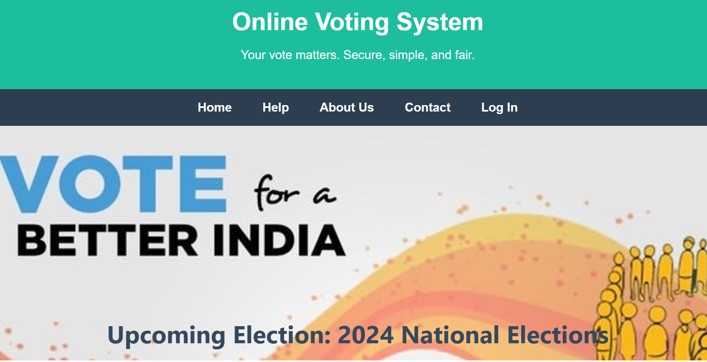

Projects

Online Voting System
A secure and user-friendly platform for online elections, ensuring transparency and privacy.

Health & Stress Management App
An application designed to help users monitor their stress levels and provide remedies for better mental health.